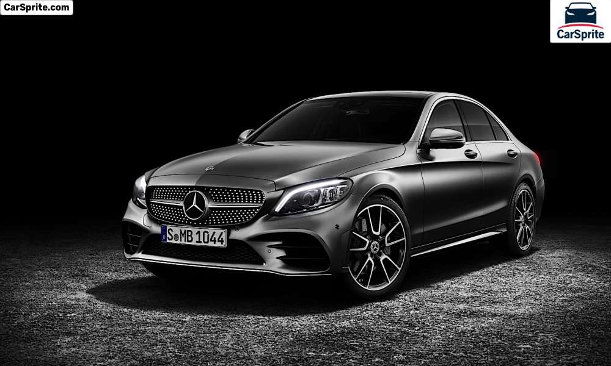
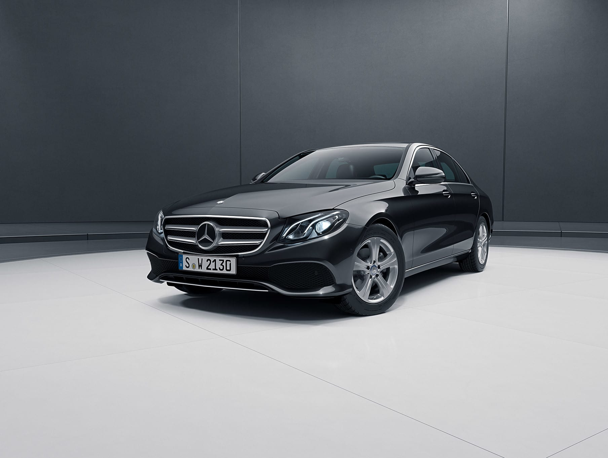
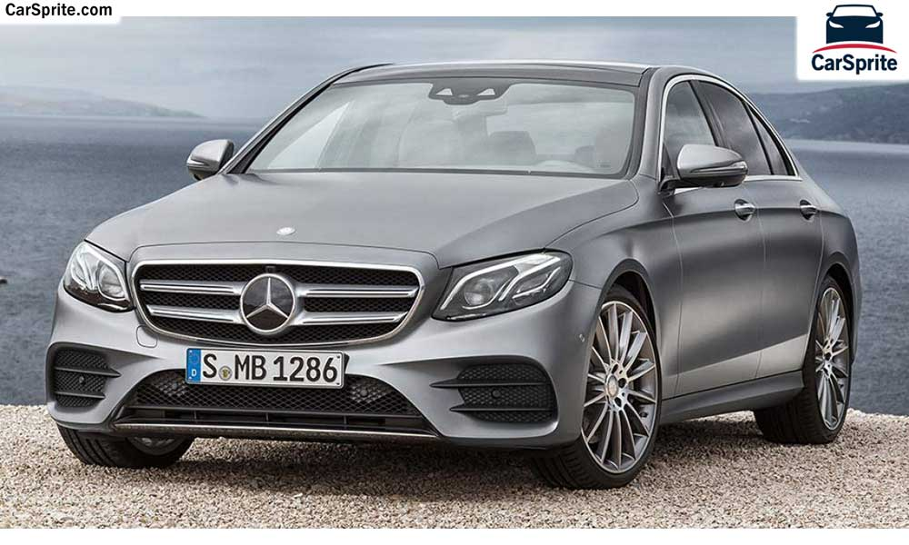

|  | سيارة مرسيدس C180 هي سيارة المانية المنشأ، تأتي السيارة الى الأسواق المصريه بفئتين بسعر من 790 الف جنيه وحتى 885 الف جنيه، سيارة C180 والـC-Class عمومًا تعتبر سيدان مدمجة الحجم، والسيارة تأتي في مصر تابعه لتوكيل ابو غالي موتورز. سيارة C-Class من مرسيدس تتميز بالطابع الشبابي، حيث تعتبر السيارة أصغر من مرسيدس E-Class في الحجم والمساحات مما يضعها في المقام الأول للشباب بتسعيرها الأرخص، كما تُقدم العديد من التجهيزات المُميزة بالنسبة لفئتها السعرية. |
|  | مرسيدس بنز E200 موديل 2020 يقدم طراز E200 بمحرك رباعي الاسطوانات سعة 2.0 لتر , يولد قوة 184 حصان وعزم اقصي للدوران يبلغ 300 نيوتن متر و ناقل حركة اتوماتيكي G-TRONIC من 9 سرعات , يمكن السيارة من التسارع من 0-100 كم/الساعة في خلال 7.7 ثانية , وتحقيق متوسط استهلاك وقود يبلغ 5.9 لتر لكل 100 كم بسعر 1.305.000 جنية مصري |
|  | مرسيدس بنز E300 موديل 2020 تقدم النسخة الاقوي من E كلاس في مصر , بنفس سعة المحرك 2.0 لتر لكن يولد قوة اكبر تبلغ 258 حصان , و عزم اقصي للدوران يبلغ 370 نيوتن متر , و يتصل صندوق سرعة اتوماتيكي G-TRONIC من 9 سرعات يمكن E300 من التسارع من 0-100 في خلال 6.3 ثانية وتحقيق استهلاك وقود يبلغ 6.6 لتر لكل 100 كم/متر بسعر 1.590.000 جنية مصري |
|
مرسيدس بنز E300 موديل 2020 تقدم النسخة الاقوي من E كلاس في مصر , بنفس سعة المحرك 2.0 لتر لكن يولد قوة اكبر تبلغ 258 حصان , و عزم اقصي للدوران يبلغ 370 نيوتن متر , و يتصل صندوق سرعة اتوماتيكي G-TRONIC من 9 سرعات يمكن E300 من التسارع من 0-100 في خلال 6.3 ثانية وتحقيق استهلاك وقود يبلغ 6.6 لتر لكل 100 كم/متر بسعر 1.590.000 جنية مصري |